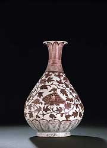
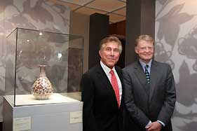
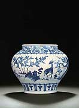
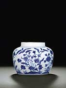
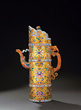
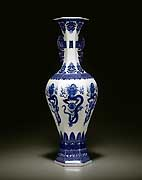

| Feat of Clay
Christie's Auction of Ceramics in Hong Kong,
by Uma Nair
Artifacts
redolent of myth, mystery and majesty. Christie's Auction of Ceramics
at Hong Kong said everything about the power of perfection to the
tender process of achieving the subliminal essence in the firing
of age old techniques that seeked to capture the infinite in tenuous
dictums of technical virtuosity.
To celebrate 20 years of their presence in Hong Kong Christie's
brought forth a collection of ceramic ware that exemplified history
and embraced nostalgia. From the word go it was all eyes on the
Early Ming under glaze Copper Red
Vase a great masterpiece of Hongwu porcelain. Every aspect
of its manufacture has been successful,' says Rosemary Scott senior
academic consultant at Christie's Asian departments, from being
thrown on the wheel, the choice and execution of its decoration
,the application of its glaze, to its final firing',
Finally after much speculation and feverish bidding this Ming Vase
went down to the hammer for an astounding HK$78,520,000, US$10,207,600.
For its pedigree and its persona this rare Yuhuchunping , Hongwu
Period (1368-1398) piece was sold to Mr. Steve Wynn, Chairman and
CEO of Wynn Resorts who has announced that he will be donating this
exceptional piece to a museum in Macau. ` In view of the importance
of this piece, we are particularly thrilled that it will be returning
to China where it can be enjoyed and appreciated by the maximum
number of students and art lovers' said Christie's.. The vase realized
HK$78,520,000, a world record price for Ming porcelain.
|  |
The buyer, Mr. Steve Wynn (left), Chairman
and Chief Executive Officer of Wynn Resorts (Macau), and Mr.
Edward Dolman (right), Chief Executive Officer of Christie’s
International with the early Ming underglaze copper-red vase
which realized an astonishing HK$78,520,000 in The Imperial
Sale held at Christie's Hong Kong today (30 May), setting
a world auction record for any Ming porcelain.
|
What makes this piece a gem of purest ray serene? The use of copper
to produce red on high fired ceramics has from its first appearance
in the Tang dynasty provided a formidable challenge to the potter.
The process of producing the desired colour is so sensitive that
great care has to be taken with the composition of the base glaze,
the percentage of copper, the temperature and degree of reduction
in the firing and the placement of vessels within the kiln. In fact
research shows that the copper red decoration was discovered empirically
or by accident. This vase is undoubtedly is one of the finest examples
of under glaze porcelain to have been made during the Hongwu reign.`It
is remarkable that it has fired so perfectly and even more remarkable
that it has survived in excellent condition to the present day,'
says Scott.
Collectors in Hong Kong seemed to be excited to hear the news of
the new world record set by the Ming ware and soon they sat and
went back in time talking of the yesteryear. How Hong Kong's impending
change from British to Chinese Communist rule had led to an exodus
of Chinese art, with residents sending their collections overseas
out of fear that China may prevent the export of items deemed to
be cultural patrimony.
The second highest bidding in the ceramic and Imperial auction was
nabbed fairly and squarely by an extremely rare blue and white 'three
friends' jar, Guan, Yuan Dynasty, mid-14th century exquisitely painted
globular jar that went for HK$21,400,000, US$2,782,000.
It was imminently clear those transition periods that bridge the
abyss from one culture to another hold a special fascination to
our society. Chinese firing techniques changed according to tastes
and influences of rulers. Objects d'art of any size and significance
appeared to substantially have a link between the spread of an empire
and the formulation of a new culture.

The next highest bid was an important Ming blue and white jar, Guan,
Chenghua six-character mark within double-circles and of the period
(1465-1487) that sold for HK$16,920,000, US$2,199,600.
Collectors and connoisseurs alike have revered the Chenghua reign
this jar was a product of greater refinement of raw materials and
better preparation. The fact that it had as little iron impurity
resulted in whiter body material. According to studies there was
also slight adjustment in the composition with the proportion of
clay to baidunzi (china stone) being increased so that so that there
was more alumina and less calcia to produce honey white body which
could be fired at a slightly higher temperature than previous porcelains
and was thus more vitrified. The glaze on this jar was improved
by reducing the amount of flux in the glaze which allow it to mature
at a higher temperature enabling more of the residual batch material
to be dissolved in the glaze during firing. This produced a smooth
glossy glaze with minute bubbles evenly distributed. This gives
the glaze its much admired unctuous jade like texture, while the
tiny bubbles produce a soft appearance without masking or distorting
any decorating beneath. A reduction in the amount of iron in the
glaze resulted in a cleaner clearer glaze. The persistence of colour
texture and style of painting of the cobalt blue is in keeping with
another feature of the Chenghua style. This jar reflected therein
the magic of Chinese Cobalt.
The
sale proved to be the awakening of an ephemeral treasure trove,
with ceramic ware reflecting the prowess and aesthetics leanings
of varied dictums of dynasties. A superb Imperial blue and white
hexagonal 'Dragon' vase, Qianlong six-character sealmark and of
the period (1736-1795) went for HK$13,560,000, US$1,762,800.
Tall slender and hexagonal this painted entity with a full faced
dragon grasping a shou medallion above a brand of archaistic cicada
blades was a quaint piece that had embellished key frets and a tall
waisted neck with a shou character between archaistic foliate dragon
motifs above and below. What stood out in this piece was not only
its novelty of form but the brilliance of the cobalt blue.
With a fantastic collection of an amazing number of ceramics on
sale this auction was also about learning about different genres
in the Chinese period of porcelain and clay firing. During some
periods, the Chinese porcelain maker's art attained a complexity
that mirrors the conflicting influences at work. The aesthetics
of the Song dynasty preceding the Yuan rulers had been about daintiness
of form, hue and pattern. The Mongol domination, which extended
over China and the Iranian world, signaled the end of the Song ideal
in the Chinese art of the object. Palace wares became huge, the
colors intense and contrasted and patterns crisply arrayed and outlined.
The Yuan wares reveal from Day One a cultural revolution which the
Ming who overthrew them nevertheless perpetuated.
Even the porcelains that supposedly maintained earlier tradition
reveal a change of sensibility. There were some ravishing bottles
of so-called pear shape more heavily potted and the pale greenish
(qingbai) glaze, much loved in Song times. The radical change of
orientation came out most strikingly in entirely new categories.
The contrasting tonalities and the sculptural handling of the dragons
and the frets made the sale have a vigor that was rare to see.
The most spectacular expression of the aesthetic revolution was
the blue-and-white porcelain and this sale reflected the fact that
Ming porcelain makers were boldly innovative across the border.
In the early 15th century, they used copper oxide to produce the
first red-glazed ceramics. Some are monochrome; others are decorated
with dragons reserved in white on the outer sides. From rounded
shoulders to waisted necks to flared mouths and penciled styles
this auction that celebrated 20 years of Christie's in Hong Kong
became an exercise in the patronage of ceramic arts that flourished
well before our modern times.
Uma Nair
Thanks also to Janice Yeung, Christie's Hong Kong
- Public Relations Department. Images ©
Christie's.
|
{kind=link}
{kind=link}
{kind=link}
{kind=link}
{kind=link}
{kind=link}